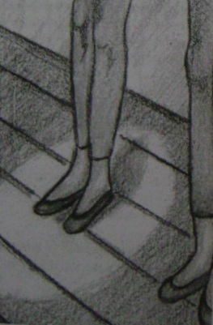

Hayat bazen tiyatroya benzetilir, kolay bir benzetme! Karakterlerin girip çıkışları, günün olayları ile birlikte yükselen gerilim, kullanılan sözcükler, oynanan roller... Her günü sahnede geçirdiğimiz söylenebilir. Hatta oyunu türlere göre ayırabiliriz: Ofis komedileri ve okul sonrası spesiyalleri, hatta kimi zaman bir polisiye ya da romantik macera. Ve her günün yıldızı, siz! İşte hayat sahnesini bu kadar sürükleyici ve çeşitli yapan da budur. Her bölümdeki oyuncular, sokaktaki figüranlar da kendi tiyatrolarının her gün karmaşıklaşan oyununda yıldızdırlar, iki insan arasındaki en basit iletişim bile içerisinde sonsuz anlamlar barındırabilir. Belki de bu yüzden aynı karakterlere ve aynı hikâyelere karşın asla sıkılmayız. Şimdiki senaryoda perde kalkıyor ve spot sizin üzerinizde.
1. Bir tiyatro topluluğunun üyesisiniz. En çok ne tür bir oyunda rol almak istersiniz? Bu oyunda en önemli sahneniz hangisi? Detaylı olarak açıklayın.
2. Bu rol için denemeye girdiniz ve tüm arkadaşlarınız arasından başrol için seçildiniz. Seçildiğinizde en büyük rakibiniz size ne söyledi? 3. Açılıştan önceki son kostümlü provada yönetmeni önünüzde kollannı kavuşturmuş otururken gördünüz. Oyununuzu beğenmemiş gözüküyor. Beğenmediği nedir? 4. Oyun hiç hatasız oynandı ve büyük basan kazandı. Alkışlarla tekrardan sonra kalabalık mutlu bir şekilde evlerine gitti ve şimdi tiyatro sessiz. Karanlık sahnede dururken boş koltuklara ne dersiniz?
